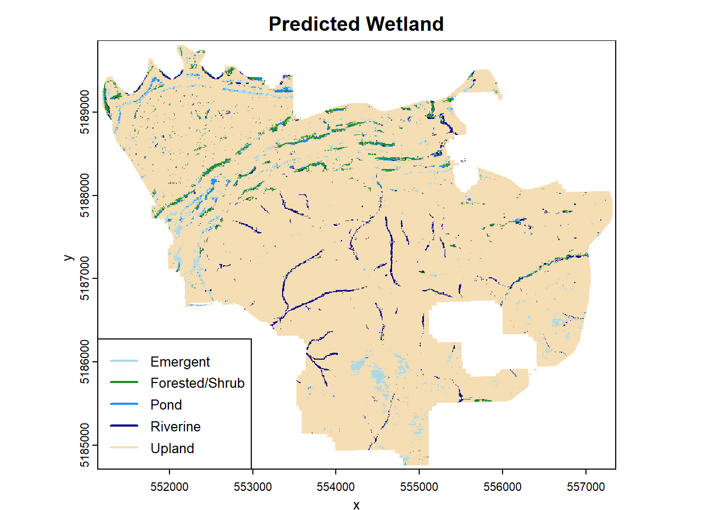

library(terra)terra 1.7.55To conduct basic plotting, it is easiest to just load in the terra package, as done below.
Now, you can just type in the plot function and add the raster/vector object inside
Since having both of these plots above is redundant, we can also choose to plot just one
If we want to be fun and add rainbow colors, type in rainbow(n), with n being the number of meadows. Since there are 5 different classes in class_multi, we will type in rainbow(5)
Also can choose the color for each class. Here is a description of all the colors that can be used
You can also add labels to the plots as well. Adding a title just requires an input of main and adding x and y labels just require inputs for xlab and ylab, respectively (though x and y labels are less important in spatial plotting).
Another thing that you can try is changing the legend. We can see from the above plots that the names for the values are simply too long for the legend. To improve on this, we need to add the add_legend() function in terra after plot(). The inputs of this are the position of the legend (should be typed in first), the labels for the legend, and the colors that are depicted (can just copy/paste from plot). A few other inputs are cex (legend size) and lwd (line width), both of which can be chosen by trial and error. Also, in order to prevent having multiple legends, type legend = FALSE into plot().
plot(class_multi, main = "Predicted Wetland", xlab = "x",
ylab = "y", col = c("lightblue", "forestgreen", "dodgerblue", "darkblue", "wheat"), legend = FALSE)
add_legend("bottomleft",
legend=c("Emergent", "Forested/Shrub", "Pond",
"Riverine", "Upland"),
col= c("lightblue", "forestgreen", "dodgerblue", "darkblue", "wheat"), cex = 0.8, lwd = 2)
If you desire more advanced and more customizable plots, then that is what the tidyterra package is for. More information on this package, including how it is used, can be found here. The package includes data manipulation features, which you might find interesting, but is not within the scope of the WIP tool.
Say you to take the outputs, whether they are the probability rasters or the gradient, and be able to use or see them outside of R. This could be so you can take a look at them using a GIS software or so you can share your results. Whatever the reason, there are a number of ways to do this.
As mentioned above, many of the functions, such as surface_met and run_model, have export options (using the executable files exports them automatically). As such, the only action needed to be done in order to have an exported file would be to type in export = T.
However if that did not happen, then no worries, here is a guide to exporting on your own. For this, we will use the terra::writeRaster() function, which requires two inputs: the R input we want to export and the name of the exported file. Below we will export the class_multi raster into a file named PF_class.tif
This file ends up in the current working directory. To find what directory you are in, run the function getwd(). To change the working directory, at the top of the screen, click on Session -> Set Working Directory -> Choose Directory.
Another way to choose where the exported file ends up is to type in the full directory into the filename input. This is shown below:
One last thing to note is for how to export when the object contains more than one raster inside. This happens above with objects like prob_multi, elev1, and elev2 (among others). To export these correctly, you will need to export each raster one at a time. This is done by adding a $ after the variable name, and then typing the name of the specific raster after, as shown below:
As always in dealing with any sort of computer processing, it is just a matter of time until an error message pops up. This section covers some of the more common errors that may show up when running the WIP tool that are also not easily explained by the error message.
If you are typing in a file directory and use “\” (backslash) once when acknowledging the break between files, R will throw an error such as '\P' is an unrecognized escape in character string (the P is a placeholder for whatever letter is after the backslash)
std::bad_aloc is a memory error, meaning whatever R is trying to do is taking up too much memory for the computer to handle. Apart from just using a computer with more memory, the best way to solve this is to split up the area you are running into multiple parts, run each of the parts one at a time, and then mosaic them together afterwards.
No wetlands to sample is an error from the build_train_pts function. Aside from the wetlands file actually being empty, there are two possible issues:
Incorrect input in wet_types, meaning that the function is searching for wetlands that are actually not there
Incorrect input in wet_field, which means that the function can’t find where the types of wetlands are listed. This will happen when the wetlands are from a different database than NWI. To figure out what the field name is, try using the names() function and then see which field is most likely to contain the wetland types, then type that into wet_field
However, if a different error shows up, keep in mind that usually the best way to solve an error is to copy the error message R puts up, and then paste it into a search engine. It might seem like a cheat and a bit lazy, but it is a very successful debugging tactic.